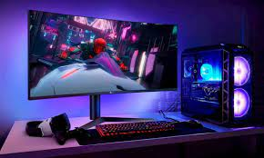

Videojuegos de consolas y para computadoras
Así como todo juego importante al mercado tiene su juego en mobile, todos también tienen su propio juego en Consolas y Computadoras.
Call of Duty Warzone
Playernknows's Battlegrounds
Apex Legends

Así como todo juego importante al mercado tiene su juego en mobile, todos también tienen su propio juego en Consolas y Computadoras.
Call of Duty Warzone
Playernknows's Battlegrounds
Apex Legends
Descripción del juego: El juego cuenta con un modo de juego llamado, Battle Royale, el cual debes de sobrevivir en contra de 150 personas de las cuales todos tienen el mismo objetivo, GANAR y SOBREVIVIR. Características: Este juego cuenta con 100 millones de jugadores mensuales, donde este juego lo pueden jugar personas mayores de 18 años. Recursos mínimos: para jugar este juego debes de contar una consola de videojuegos de última generación y en computadora Windows 10 64-bit, Core i5-2500k, 16GB de memoria RAM, Targeta de video NVIDIA GeForce GTX 970, espacio en el disco duro 175 GB. Y para las consolas nada más necesitamos las que han salido al mercado, las más nuevas, las de última generación.

Descripción del juego: Este popular juego que fue lanzado en el 2017 al mundo, fue de los primeros en tener el popular modo de juego llamado Battle Royale, donde igual debes de sobrevivir en contra de 100 jugadores, personas reales donde todos buscan lo mismo, ganar y ser el número 1. Características: Contando con una media de 500,000 jugadores por mes, donde igual manera es para mayores de 18 años .Recursos Mínimos: Para jugar este juego debes de cumplir con las siguientes condiciones, Windows 10, con un procesador Core i5-4430, 8 GB de memoria RAM, Targeta de video NVIDIA GeForce GTX 960 2GB y con espacio de 40 GB en el disco duro. Y para la consola nada más que sea de última generación como es el Xbox series X y en PlayStation la 5.

Descripción del juego: Lanzado el 4 de febrero del 2019, dónde debes de sobrevivir en contra de 60 jugadores, también hay un modo Ranking, donde debes de avanzar de liga para ser el mejor. Características: Cuenta con un millón de jugadores mensuales, manteniendo la cifra por muchos años, igual que todos los juegos anteriores, es para mayores de 18 años. Recursos Mínimos: Sistema Windows 7 de 64 bits, Core i3-6300 3,8 HHj/AMD FX-4350 4,2 GHZ con procesador de 4 nucleos, 6GB de RAM, Targeta de video NVIDIA GeForce GT 640/Radeon HD 7730 y 22 GB de espacio en el disco duro. Y para las consolas nada más las de última generación.